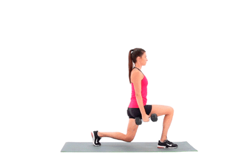

1. Stand with your torso upright holding two dumbbells in your hands by your sides. This will be your starting position.
2. Step forward with your right leg around 2 feet or so from the foot being left stationary behind and lower your upper body down, while keeping the torso upright and maintaining balance. Inhale as you go down. Note: As in the other exercises, do not allow your knee to go forward beyond your toes as you come down, as this will put undue stress on the knee joint. Make sure that you keep your front shin perpendicular to the ground.
3. Using mainly the heel of your foot, push up and go back to the starting position as you exhale.
4. Repeat the movement for the recommended amount of repetitions and then perform with the left leg.